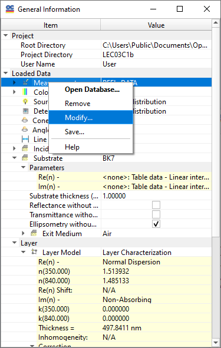

General Information Window
You can check the status of OptiChar in the General Information window. This window displays general information, such as the Root Directory, Problem Directory, and User Name, along with the data that have been loaded into memory. It also shows most of the settings from the Configuration menu, including units and other preferences.
OptiChar mode setting (Angular or Spectral data representation) is also displayed in this window.
Once closed, this window can be displayed again by selecting General Information from the View menu or by pressing Ctrl+I.
You can access more detailed information (expand nodes) by clicking the boxes with + buttons, and hide unnecessary details (collapse nodes) by clicking the boxes with - buttons. In the illustration below, some nodes are collapsed.

Many frequently used commands can be accessed using the right-click popup menu. The context of the right-click menu depends on the current selection in the General Information Window. In the example below, Measurements data operations are presented:

Many operations can be completed directly in the general information window with the help of editors positioned in the Value column. For example, loaded items can be changed using drop-down lists. Some values can be directly edited, such as substrate thickness.